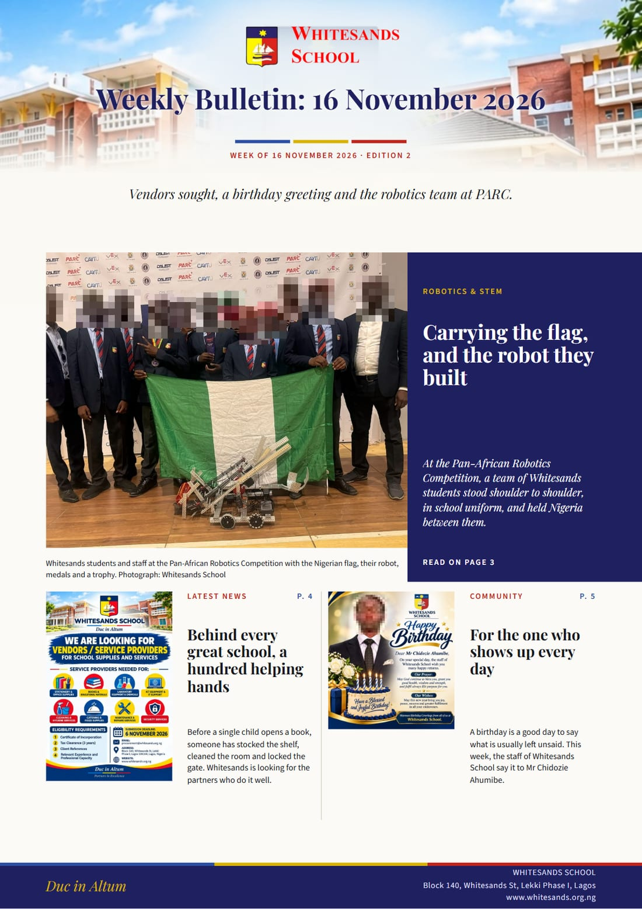

Whitesands Press
The school's own publishing platform. A teacher adds a photograph, the editors check it, School Management approves, and the whole school reads it, in print or on a phone.
This is a demonstration with sample content. The photographs are the school's own sample material, and every face in them is pixelated here. The live platform is not yet open to the public.
Read a bulletin
This is a real six-page issue made by the platform. Page one is the front page: the whole week at a glance, with the page to turn to for each story. Use the arrow keys or the buttons, and click a page to enlarge it.

From a teacher's phone to the whole school
Seven steps, each shown from the real screens.
What is built
Consent first
Photographs stay private until an editor verifies consent and approves them. Nothing becomes public on its own.
Approval that sticks
Only School Management can approve an issue. Change a page afterwards and the approval no longer covers it.
Print and phone
One layout makes the print PDF (with bleed and crop marks), the compressed digital PDF and the page-turning reader.
Anyone can contribute
Teachers type, paste or speak a picture's description, and can paste a copied picture straight in.
On schedule
Reminders go to the right people each week, and an approved issue can be released at a chosen time.
Private readership
The school sees what is read, from anonymous daily totals. Nothing about the reader is kept.